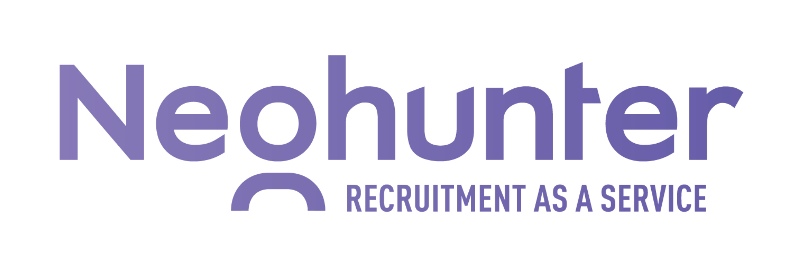

+++
title = "Neohunter s.r.o. - Remote Recruitment Partner"
slug = "76"
+++

<div class="container mb-5">
    <div class="row justify-content-around">
        <div class="col-6 col-md-2 mt-3">
        </div>
        <div class="col-md-8">
            <h1>Neohunter s.r.o.</h1>
          <h2>Remote Recruitment Partner</h2>

            <p>
                <strong>Miesto: </strong>Fully remote
<br/>
                <strong>Forma: </strong>živnosť<br/>
                <strong>Flexi faktor: </strong> Časovo plne flexibilné, minimálne však 2-3h denne počas pracovných hodín. 
                                                <br/>
                <strong>Plat: </strong>€10 - €20 / Hour Hodinová mzda + variabilná mzda závislá od úspešného obsadenia pozícií.
<br/>
                <strong>Očakávaný nástup: </strong>asap<br/>
                <strong>Dátum pridania ponuky: </strong>5.5.2023<br/>
            </p>
            <h2>O firme </h2>
            <p>Recruitment-as-a-Service Provider <a href="https://neohunter.io/" target="_blank">neohunter.io</a>
      </p>
     
            <h2>Náplň práce</h2>
          <p> The ideal candidate should be highly motivated, results-driven, and have a proven track record 
            in recruiting top talent. You will be responsible for sourcing, 
            screening, and selecting qualified candidates to fill a variety of roles across 
            different industries.
          </p>
         <p>As a freelance recruitment expert, you will work flexible hours and have the 
           option to work remotely from home. This position is perfect for someone looking 
           to work part-time, full-time, or in a flexible capacity. It is also an excellent 
           opportunity for mothers who are returning to work after maternity leave, or for those 
           who could dedicate at least 3 hours daily within working hours to sourcing & 
           recruiting activities.
          </p>
          <p> Responsibilities: </p>
         <ul>
         <li>Develop and implement recruitment strategies that align with our clients’ needs
         <li>Create and post job descriptions
         <li>Actively source candidates over the social media and various platforms
         <li>Screen resumes and applications, conduct phone and in-person interviews, and evaluate candidates’ qualifications
         <li>Manage the entire recruitment process, from initial contact to onboarding
         <li>Build and maintain relationships with clients, candidates, and hiring managers
         <li>Provide guidance and support to candidates throughout the recruitment process
         <li>Analyze recruitment metrics and adjust strategies as needed
         <li>Track and report the activities in ATS
         <li>Participate on company weekly meetings
         <li>Actively build and innovate company processes
      </ul>
      </p>
      
      <h2>Požiadavky</h2>
      <ul><li>Proven experience as a recruitment expert, preferably in IT
          <li>Strong knowledge of recruiting techniques and tools
          <li>Excellent communication and interpersonal skills
          <li>Ability to work independently and manage multiple tasks simultaneously
          <li>Attention to detail and strong organizational skills
          <li>Familiarity with Applicant Tracking Systems (ATS)
          <li>Able to work and collaborate asynchronously
           
                               </ul>
      
             <h2>Doplňujúce info</h2>     
<p>Rastieme na počte klientov a potrebujeme pomoc. Sme fully remote firma a väčšinu 
  komunikácie riešime asynchrónne. Uvítame u nás kolegu/kolegyňu, 
  ktorá už má predchádzajúce skúsenosti s HR/recruitmentu a ideálne s aktívnym 
  vyhľadávaním kandidátov.
      </p>
            <h2>Ďalší postup</h2>
<p>Životopis môžete poslať cez formulár na <a href="https://neohunter.io/job/remote-recruitment-partner/" target="_blank">neohunter.io</a> </p>

        </div>
        <div class="col-md-2"></div>
    </div>
    <div class="row">
        <div class="col offset-md-2 mt-5">{{< back >}}</div>
    </div>
</div>
